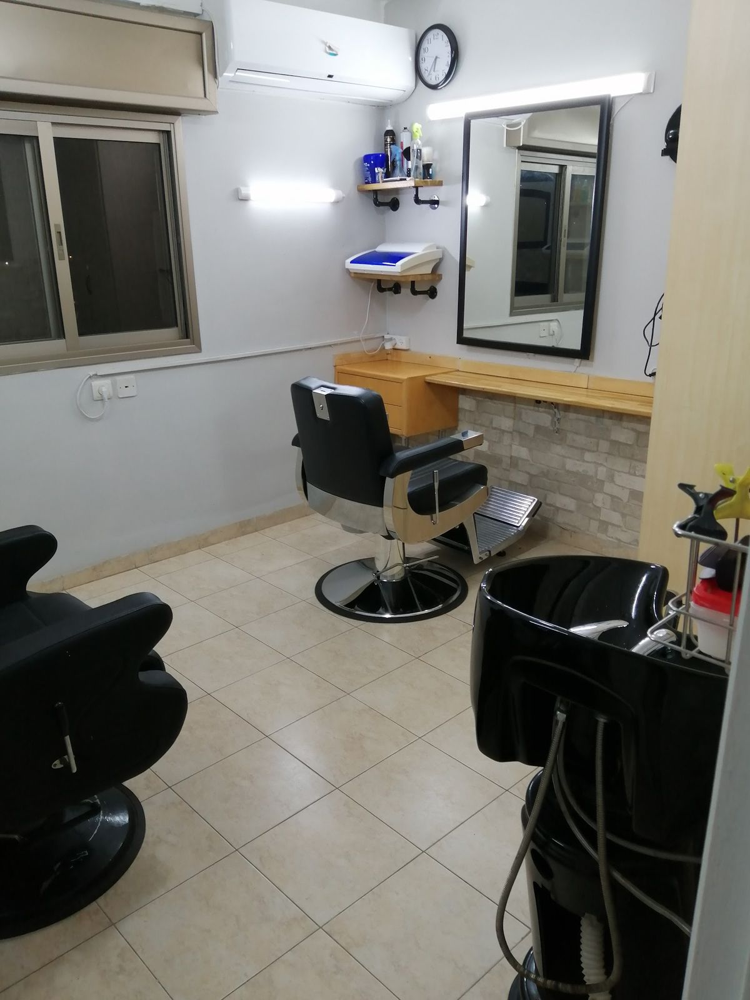
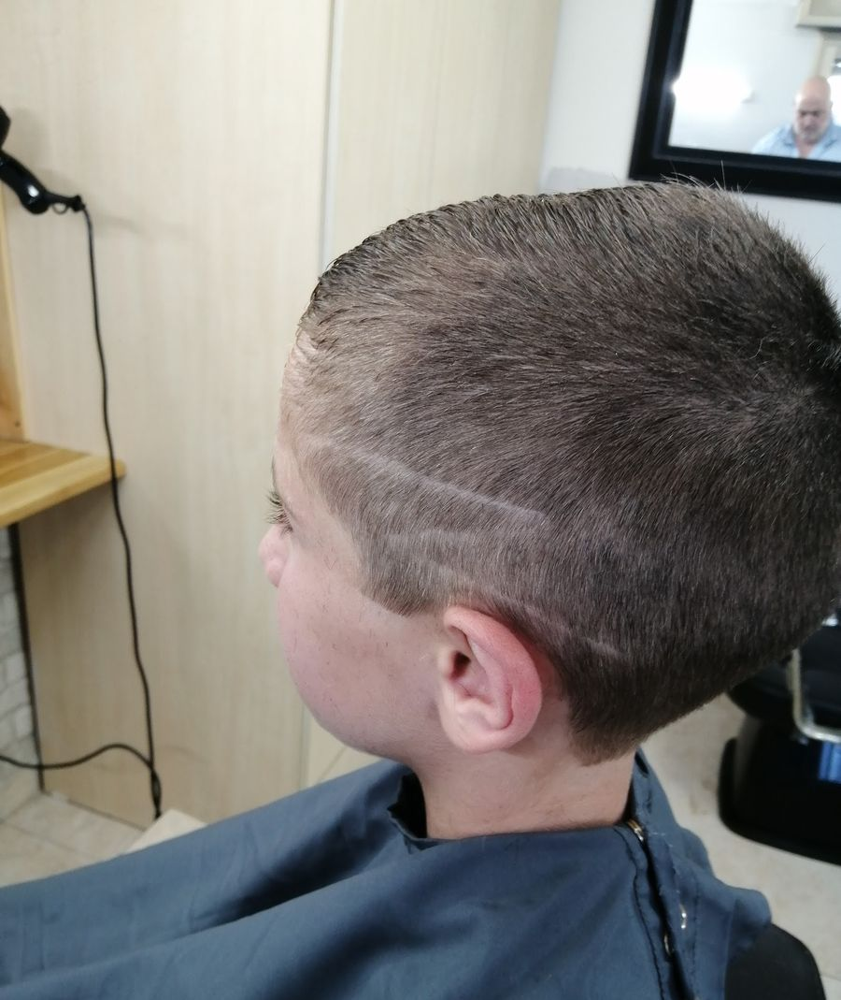
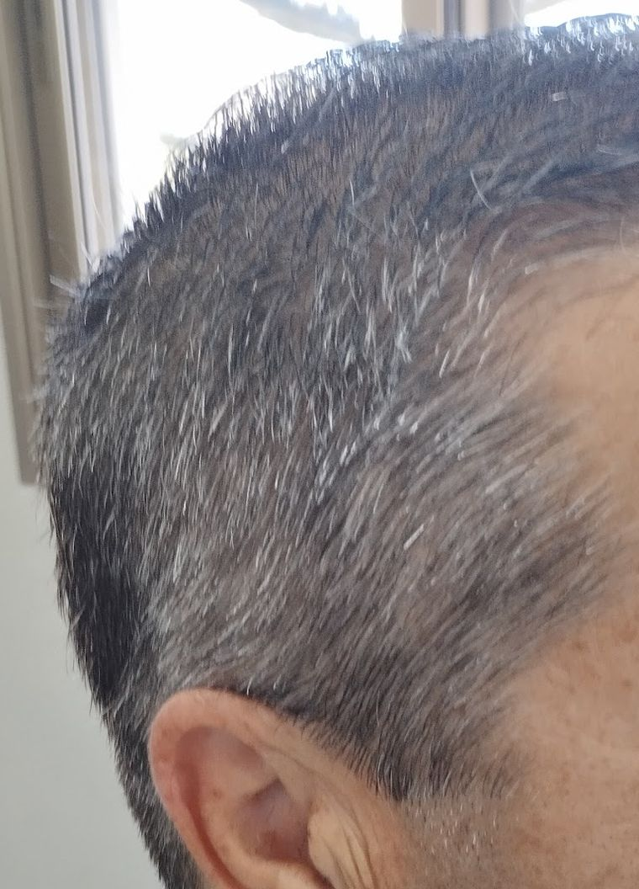
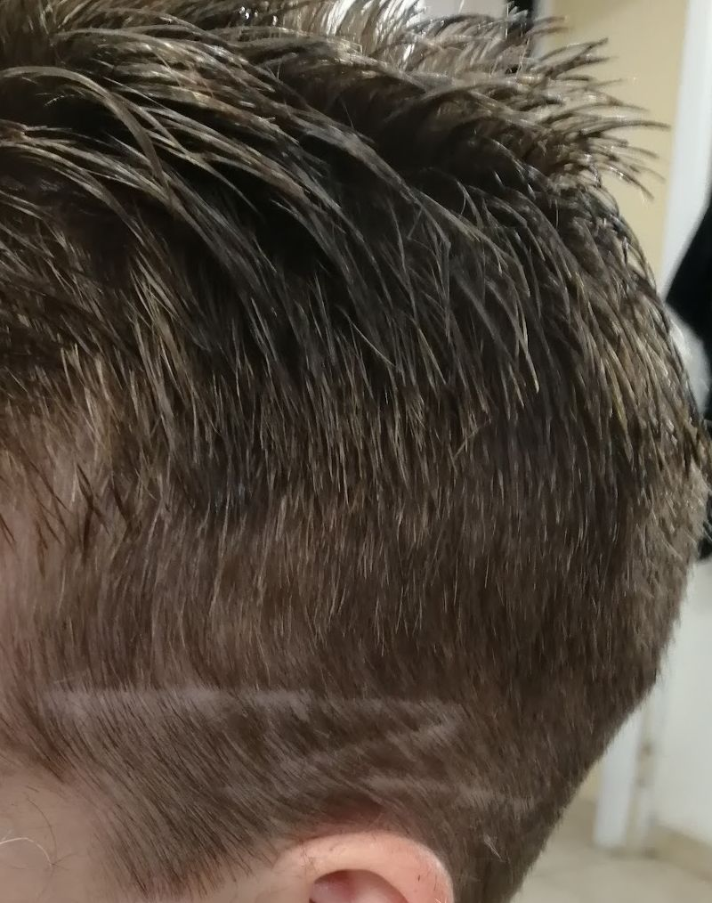
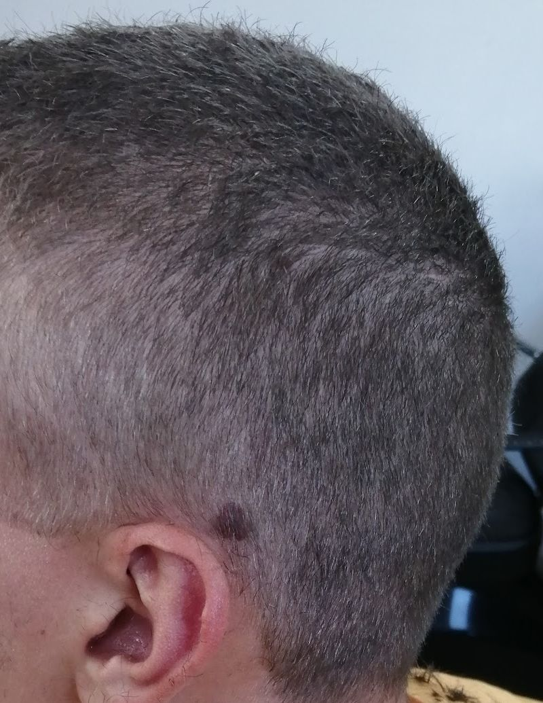
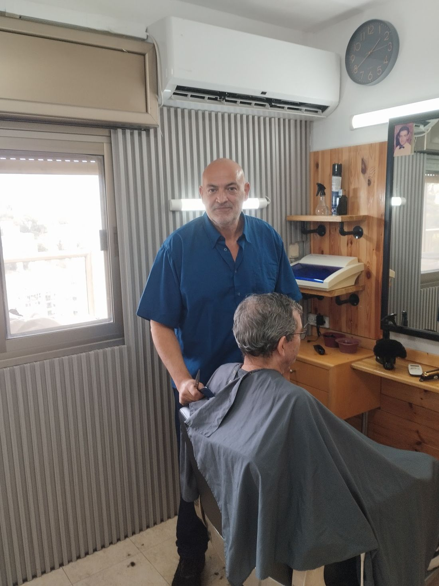
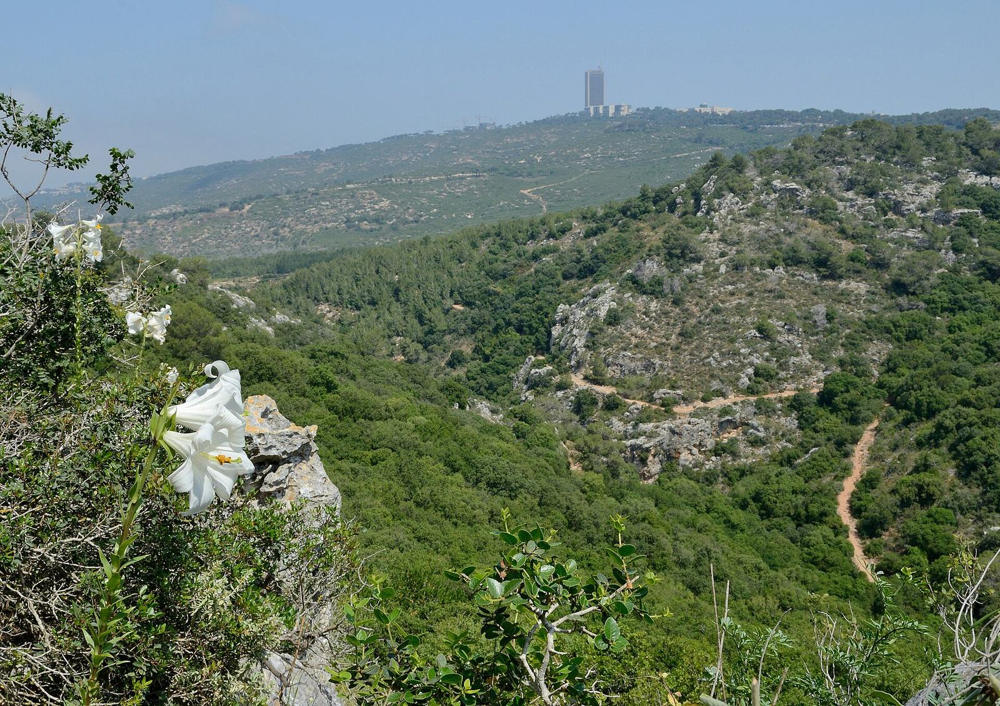
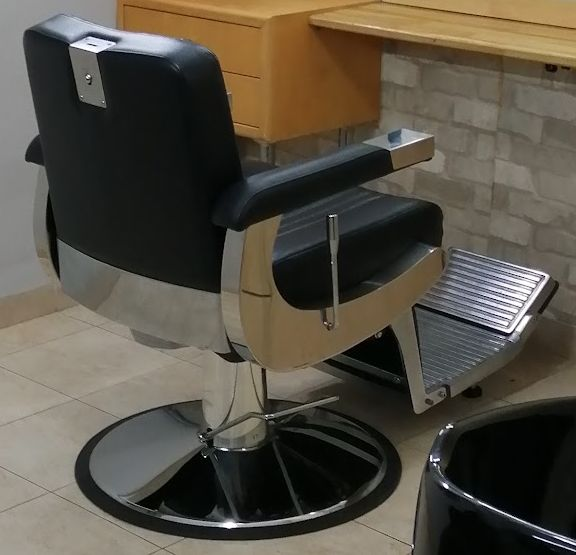
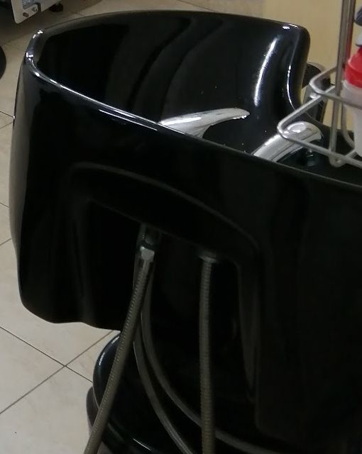

אילן מלכהIlan Malka
מספרה ביתית על הכרמלA home barber on the Carmel
תספורות לגברים ולילדים, בחדר מצויד בביתו של אילן ברחוב זאב שוהם, חיפה.Haircuts for men and kids, in a fully equipped room in Ilan’s home on Ze’ev Shoham Street, Haifa.






מהנביאים הביתהFrom HaNevi’im to home
שנים רבות במספרה ברחוב הנביאים בהדר. היום אילן מקבל לקוחות בחדר מצויד בביתו, על הכרמל.Many years at a salon on HaNevi’im Street in Hadar. Today Ilan welcomes clients in an equipped room in his own home, on the Carmel.

תמונה להמחשהIllustrative photoחלון לוואדיA window on the wadi
מחכים כמה דקות? מהחלון של החדר רואים את הוואדי. פתוח כל השבוע, עד הערב.Waiting a few minutes? The room’s window looks out over the wadi. Open all week, into the evening.
גברים, נערים וילדיםMen, teens and kids
תספורת ילדים
קלאסי וקצר
מדורג

כיסא ספר אמיתי

כיור חפיפה
כרטיס תורAn appointment card
מנקבים שלוש שורות, וההודעה לאילן מוכנה.Punch three rows and your message to Ilan is ready.
4.9
85 ביקורות בגוגל85 reviews on Google
מסתפר אצל אילן שנים רבות במספרה בנביאים בשביעות רצון גבוהה. אילן מקצוען אמיתי, אדם נעים, אינטליגנט ועם שירות אישי אדיב. שמחתי לשמוע שכעת ניתן גם לקבל שירות על הכרמל גם בשעות מאוחרות בנוחות מירבית. ממליץ מאוד ומאחל לו הצלחה רבה
I’ve had my hair cut by Ilan for many years at the salon on HaNevi’im, and I’m very satisfied. Ilan is a true professional, a pleasant, intelligent person with kind personal service. I was glad to hear you can now also get his service on the Carmel, late hours too, in full comfort. Highly recommended, and I wish him great success.
…לפני מספר שנים הוא פתח את המספרה הביתית המצוידת בכל הנדרש ללא כל פשרה. ברחוב יש תמיד חניה בקרבת מקום ואם צריך להמתין מספר דקות עד שיסיים עם הלקוח שלפניך אז בינתיים אפשר ליהנות מהנוף היפה לכיוון הוואדי.
…A few years ago he opened the home salon, equipped with everything it needs, no compromises. There’s always parking nearby on the street, and if you need to wait a few minutes for him to finish with the client before you, meanwhile you can enjoy the lovely view toward the wadi.
…אילן ספר מקצועי, שרותי ואדיב. שעות העבודה של אילן גמישות ומתאימות לאנשים שעובדים ברוב שעות היום.
אני ממליץ על אילן בחום.…Ilan is a professional, service-minded and courteous barber. His working hours are flexible and suit people who work most of the day. I warmly recommend Ilan.
…מעבר להיותו ספר מצויין הוא גם איש שיחה נעים , זמין תמיד ומתאים עצמו ללקוח גם בזמן שנוח ללקוח וגם בסוג התספורת.
…Besides being an excellent barber, he’s a pleasant person to talk to, always available, and adapts to the client, both in the time that suits the client and in the kind of haircut.
לפני שבאיםBefore you come
איפה זה בדיוק?Where exactly is it?
זאב שוהם 43, חיפה. המספרה בחדר בביתו של אילן.43 Ze’ev Shoham St, Haifa. The salon is a room in Ilan’s home.
אפשר להביא את הילדים?Can I bring the kids?
כן. בתמונות של אילן יש לא מעט תספורות ילדים, גם עם קווים בצד.Yes. Ilan’s photos show plenty of kids’ cuts, side lines included.
ומה עם חניה?What about parking?
לקוחות מספרים בביקורות שיש חניה ברחוב, קרוב למספרה.Clients write in their reviews that there’s parking on the street, close by.
איך קובעים תור?How do I book?
בוואטסאפ או בטלפון לאילן: 052-870-7935.WhatsApp or call Ilan: 052-870-7935.